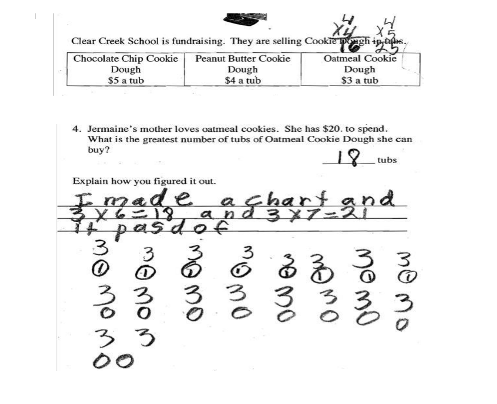

Week 7 · Second session — Clinic
1 · Questions, then a walk through the Studio (~20 min)
- Any questions about the Q&A? Additional questions it didn't address?
- A walk through the Research Question Studio, tab by tab — on the screen, with everyone following along on their own machine. Ask as we go; this is the twenty minutes for it.
- 1 · The Concept. Press Bring in my Concept Profile and watch your grade, your concept, and one slot for each piece of work you collected arrive from the Planner. Nothing is locked — change either one if it is not right.
- 2 · Collected work. Your photo on the left, the three boxes on the right, one sample at a time. What the task asked for, what the work shows, what it makes you wonder. Describe the work; do not diagnose the child.
- 3 · Brainstorm. The four rules, on your own QFocus. Ten questions before anything can be sorted, and the O and C do not appear until you press Done — rule 2 built into the page, so you cannot stop to judge on the way.
- 4 · Check names. A scan for anything identifying, before any of it leaves your machine.
- 5 · Hand off. One PDF — your concept, your reading of the work, your question storm. That PDF is Document 1. Then the button opens the Planner at 2c with your work already in it.
- Everything stays in your browser, and you upload nothing. What you type is a description, so keep it de-identified: a pseudonym, never a real name.
2 · One QFT, together (~15 min)
- Before you storm alone, we run the protocol once as a class on one shared QFocus — real student work that none of you collected, so the noticing is shared and nobody is defending their own placement. One third grader, one question:

From Cookie Dough, NYC DOE Grade 3 — student work samples (Achieve/EQuIP). Six papers are published with the task; identification and grades were redacted by the publisher. - Why this one. The arithmetic is right: 3×6 is 18 and 3×7 is 21, and 21 is more than twenty — “it pasd of”. The answer written on the line is 18. Something is being counted, and it is not tubs. Then there is the chart, which nobody can read at a glance, and the working in the margin above the price table. Plenty to ask about, and no way to settle it by looking harder — which is the point.
- Keep the other five papers out of sight for now. If we want a second pass, or a different QFocus another year, they are in the same PDF.
- The four rules, enforced out loud:
- Ask as many questions as you can.
- Do not stop to discuss, judge, or answer any question.
- Write every question down exactly as it is thought.
- Turn any statement into a question.
- Someone scribes every question verbatim. Then we mark each one open or closed, and prioritize three.
- Watch what the rules do to you. Rule 2 is the hard one, and it is the one you cannot enforce on yourself alone at a laptop.
Purpose: you will run the QFT with children, and reading four rules is not the same as having been inside them. It is also the fastest way to hear the difference between a question you would ask a student and a question about how students understand.
3 · Build your question in the Studio (~25 min)
- Now run that same protocol on your own QFocus, at your own pace. Concept and Collected work should already be done; if not, finish them first.
- Before you move on: on the Studio's Hand off tab, press Open the BDA Planner with this work. It opens the same Planner you used for your Concept Profile, with that work still in it. If it asks whether to replace your Concept Profile work, choose Cancel: your profile is already there.
- Concept — the grade, the concept, and the mathematics ahead.
- Collected work — for each sample: what the task asked for, what the work shows, and what it makes you wonder. No uploads; the work is already with your Concept Profile.
- Brainstorm — using the four rules, storm as many questions about how students understand the concept as you can, then mark each one open or closed.
- Check names — a scan to catch anything identifying before it leaves your machine.
- Hand off — produce one PDF: your write-up, your reading of the work, and your question storm. That PDF is Document 1.
Purpose: looking hard at what students actually did is what produces real questions. The rules push you past your first two or three; open/closed makes you feel which questions open thinking up.
4 · Revisit your question in 2c, and sharpen it (~15 min)
- Go back to the question you wrote for your Concept Profile. It is still in the BDA Planner at Concept Profile → Concept & question → 2c. That was your first read, written before today. Revisit it now: revise it, or replace it, using your question storm and what we just worked out together about what makes a research question better.
- Then press Check this. It reads your question against your concept and the work you collected, and pressure-tests it: is this investigable? is it about how students reason about the concept, or just whether they got it right? Show me options widens it; Ask me follows up.
- It will not hand you a question. If it tries, that's your cue to push back. You keep authorship; it only makes your own questions sharper.
- As you weigh its suggestions, keep one test in front of you: could the nested lesson you build next actually help you answer this?
Purpose: the move you're learning is AI widens, my criteria narrow. The human noticing is the source of the question; the machine is a way to see more angles on it.
5 · Land one question (~5 min)
- Prioritize down to the single research question you'll carry into the field, and write one or two sentences on why you chose it.
- Read it against the test: is it open, is it investigable, and could your nested lesson gather evidence on it? Adjust if not.
If you finish early
- Trade questions with a partner. Ask a question about their collected work that they're too close to see — then let them do the same for you. Both of you keep your own question.
- This week's deliverable is the Research Question — the question you land today, plus the record of how you sharpened it (the assignment has the details).
- Next week you design the first piece of that lesson — a rich task aimed squarely at the question you just wrote.
Assignment links, the submission dropbox, and due dates are in Canvas, below the link to this outline. This page is the lesson outline only — no names, no grades.